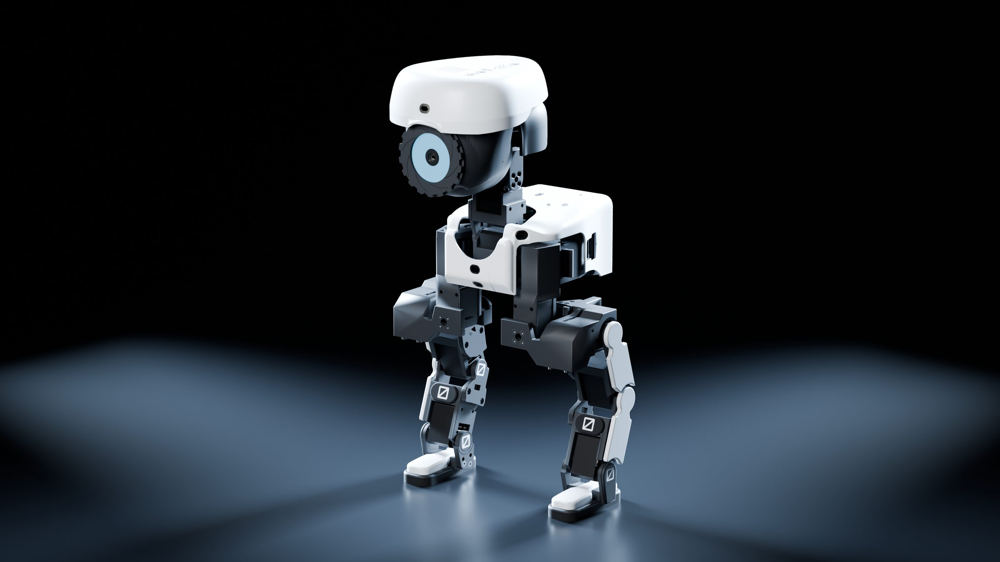
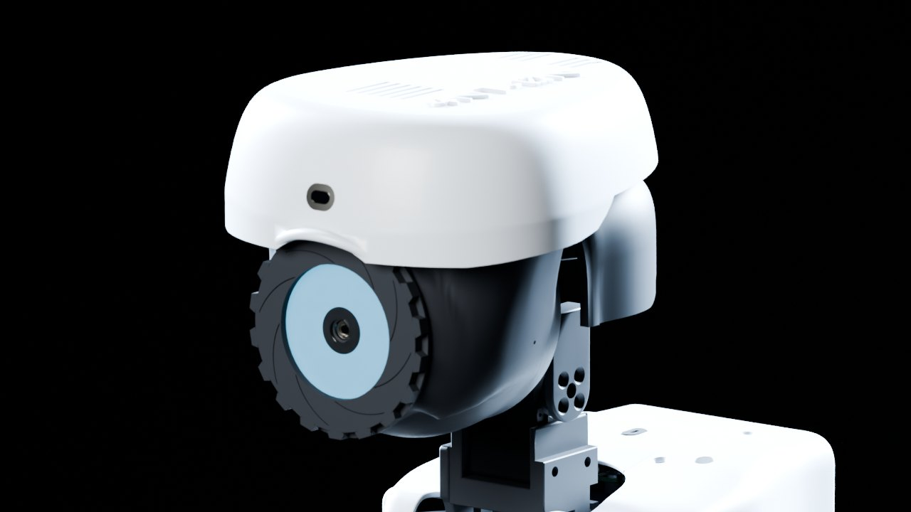
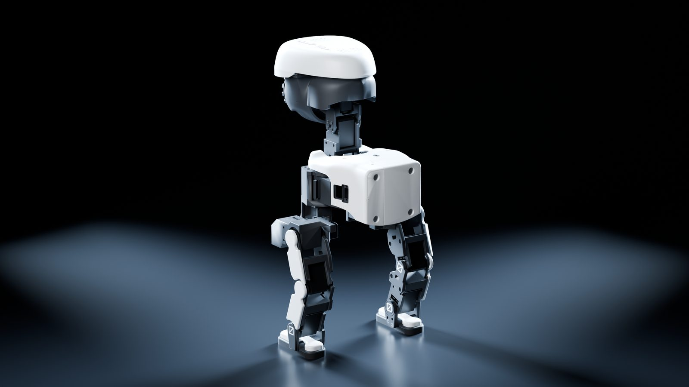

4NT-ØN
Autonomous Neural Technology · Unit ØN
Er lernt. Er denkt.
Er begleitet.
Ein zweibeiniger KI-Droide als Bausatz – wie die Modellbausätze der 90er. 43,5 cm, 14 Gelenke, ein Auge, das alles sieht. Und ein Gehirn, das bei dir zu Hause wohnt, nicht in der Cloud.
Weißt du noch?
Der Karton.
Die Anleitung.
Die Tüte mit den Schrauben.
Wer in den 90ern einen RC-Bausatz gebaut hat, kennt das Gefühl. 4NT-ØN bringt es zurück – als Bausatz für Erwachsene. Der Unterschied: Wenn du fertig bist, bringt er sich das Laufen selbst bei.
- 01
Auspacken & sortieren
Druckteile, 14 Servos, Elektronik und Schrauben – sortiert nach Baugruppe, wie damals.
- 02
Schritt für Schritt bauen
Eine Bauanleitung mit Explosionszeichnung zu jedem einzelnen Schritt (in Arbeit). Verschraubt, Teil für Teil.
- 03
Einschalten – und zusehen
Er steht auf, schaut sich um und lernt. Trainiert in der Simulation von Tausenden virtuellen Zwillingen.

Das Design
Kein Spielzeug.
Kühle weiße Schalen, Graphit-Gelenke, ein Drohnenauge mit Leuchtring. Massive Teile in Modellbauqualität, verschraubt. Gebaut, um angeschaut zu werden – und um ihn wieder zu zerlegen.
Alle Bilder dieser Seite: Renderings des aktuellen Konstruktionsstands.
Teileübersicht · Prototyp
Der Bausatz
344 Teile in neun Baugruppen. Jedes Teil hat seine Nummer – und die Bauanleitung entsteht gerade, mit Explosionszeichnung zu jedem Schritt, wie in den Anleitungen der 90er.
Außerdem dabei Stand 11/2026
- E06Lagesensor BNO0551 ×
- E18Mikrofone INMP4412 ×
- E14Verstärker MAX98357A + Lautsprecher Ø 28 mm1 ×
- E19LED-Ring (Auge) und Lichtband (Kopf), WS2812B2 ×
- E07Waveshare Bus Servo Adapter (A)2 ×
- E01Fußschalter (Bodenkontakt)2 ×
- N03Kugellager 6701-2RS und 61805-2RS14 ×
- N04Gewindeeinsätze M342 ×
- N15Neodym-Magnete Ø 8 × 214 ×
- NSchrauben M2 bis M3142 ×
- –Energie: 5-V-Wandler, Sicherung, Schalter, XT60-Ladebuchse, Kabelsatz

- Teile
- 344
- Baugruppen
- 9
- Verbindung
- Verschraubt
Stückliste des Prototyps, Stand November 2026. Den genauen Lieferumfang des Bausatzes legen wir vor dem Start fest.
Reinforcement Learning
Niemand programmiert
seine Bewegungen.
Tausende virtuelle 4NT-ØN üben gleichzeitig in einer Physiksimulation – über Nacht, auf einer einzigen Grafikkarte. Jeder Servo wird am Prüfstand vermessen, damit die Simulation die echten Motoren kennt. Neue Fähigkeit = neues Training, kein neuer Code.
virtuelle Roboter trainieren gleichzeitig
Aufstehen aus Rücken, Bauch und Sitz (je 128 Versuche, Simulation)
aus der Rückenlage auf die Füße (Simulation)
Ball schießen und die ersten Schritte am echten Roboter

Die Sinne
Er sieht, hört
und spürt.
- Kamera12 Megapixel, im Drohnenauge
- Tiefensensor8 × 8 Zonen in der Stirn – er sieht nicht nur, er misst
- Rundum-Wache4 Abstandssensoren im Rumpf: vorn, hinten, links, rechts
- Ohren und Stimme2 Mikrofone, Lautsprecher
- GleichgewichtLagesensor im Rumpf für Balance und Sturzerkennung
Das Gehirn
Ein Körper zum Anfassen.
Ein Gehirn im Haus.
Laufen und Reflexe laufen an Bord. Sprache, Gedächtnis und Persönlichkeit kommen von Boo. – einem lokalen KI-Server bei dir zu Hause, verbunden über WLAN. Der Roboter bleibt leicht. Deine Daten bleiben bei dir.
Boo. Server: in Entwicklung
- Laufen – gelernte Strategie, 50-mal pro Sekunde
- Reflexe und Gleichgewicht
- Sehen, Hören, Abstand messen
- Sprache verstehen und sprechen
- Gedächtnis
- Persönlichkeit
Keine Cloud: Kamerabild und Stimme bleiben im Heimnetz.
Das Rudel
Gebaut für ein Zuhause
mit Hund und Katze.
4NT-ØN zieht nicht in eine Familie ein – er wird Teil des Rudels. Deshalb trainiert er lange vor der ersten echten Begegnung mit virtuellen Haustieren. Jeder Stups, jedes Schnüffeln, jede Katze um die Beine – erst in der Simulation geübt.
Galerie
Von allen Seiten.




Seitenteil des Kartons
Technische Daten
Technische Daten
4NT-ØN- Höhe
- 43,5 cm
- Masse
- ca. 2,9 kg
- Gelenke
- 14 (Beine 2 × 5, Hals und Kopf 4)
- Antrieb
- 14 × Feetech ST3215-C018, 12 V, bis 2,94 N·m
- Rechner
- Raspberry Pi 5 mit Active Cooler
- Gehirn
- Boo. Server, lokale KI über WLAN
- Auge
- Camera Module 3, 12 MP, LED-Ring
- Sensoren
- VL53L5CX 8×8, 4 × VL53L1X, BNO055, 2 Fußschalter
- Audio
- 2 × INMP441, MAX98357A, Lautsprecher Ø 28 mm
- Akku
- 3S3P Li-Ion 18650 mit BMS, 11,1 V
- Material
- 3D-Druck, 344 Teile, verschraubt mit M3-Gewindeeinsätzen
- Training
- MuJoCo · PPO · 2.048 parallele Roboter
Daten des Prototyps, Stand November 2026. Laufzeit je Akkuladung wird gemessen. Änderungen vorbehalten.
Stand heute
Ehrlicher Zwischenstand.
Wir zeigen nur, was es gibt. So steht 4NT-ØN im November 2026:
- Weitgehend fertig
Konstruktion
Komplettes CAD-Modell mit 344 Teilen, Teile im Druck, Bauanleitung in Arbeit.
- In der Simulation
Training
Aufstehen aus jeder Lage, Laufen. Ball schießen in Arbeit.
- Läuft
Servo-Prüfstand
Vermessung aller 14 Servos für ein genaues Motormodell.
- Als Nächstes
Erste Schritte
Aufbau des ersten Exemplars, erster Lauf am echten Roboter, dann Kleinserie.
Gutschein · Bausatz Nr. 001
Sichere dir
deinen Platz.
Geplant: Die erste Serie wird nummeriert – ab 4NT-ØN-001 aufwärts. Trag dich ein und erfahre als Erste oder Erster, wann die Vorbestellung startet. Kostenlos, unverbindlich, jederzeit abbestellbar.
Für Investoren
Wir suchen einen Business Angel oder Investor für den Schritt vom Prototyp zur Kleinserie: Kapital, Erfahrung mit Consumer-Hardware und ein Netzwerk in Fertigung und Vertrieb. Kontakt: